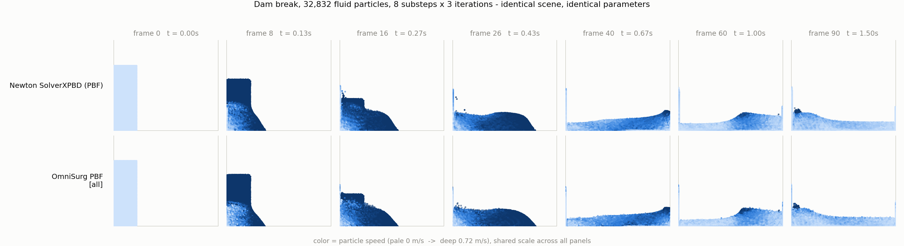

Algorithmic comparison, head-to-head benchmark, and a list of what to fix.
Both implementations solve the same equations — Macklin & Müller position-based fluids, fp32, in Warp, on Newton Model/State arrays. They differ in one structural decision, and that decision costs Newton roughly an order of magnitude. This report measures the gap on an identical scene in an identical process, attributes it to specific kernels, and lists the changes that would close it.
The branch adds eight examples under newton/examples/fluid/, a screen-space fluid renderer ported from the FleX demos, SDF particle contacts, and a 31-test solver suite. Read together, they describe a specific product intent.
Three of the eight examples are the same scenario at three levels of abstraction: cup (a cup of water you grab, explicitly documented as the arm-free ablation "easy to profile and tune"), cup_transfer (an IK-driven Franka FR3 carrying and spilling a cup, with adaptive substeps tied to carry speed), and multiworld_cup (the same scene replicated across isolated worlds). The design details — kinematically posed robot bodies, per-substep container-pose interpolation, wall-crossing velocity caps — are all about containers moving under actuation without leaking.
interactive_tank's docstring is the thesis: "No hand-tuned buoyancy, drag, or coupling forces are needed." Boxes float or sink from the unified XPBD solve. wave_pool (kinematic paddle, breaking waves, 6 bobbing primitives), dam_break (pillar + floating box) and cereal_bowl (19 torus cereal pieces in a dynamic bowl of opaque milk, ~172 shapes) repeat it with different geometry.
multiworld_cup exists to prove fluids replicate across begin_world()/end_world() and stay isolated; its test_final() asserts equal per-world particle counts and no cross-world water. Currently a 2-world proof of concept (the count is hardcoded), but the grouped hash grid and world-filtered contacts are in place.
A large fraction of the diff is renderer: anisotropic ellipsoid splatting, bilateral depth smoothing, refraction/Fresnel, translucent shadows, velocity-stretched diffuse foam. multi_fluid_tank runs three phases with per-phase absorption/IOR/specular; cereal_bowl renders opaque scattering milk. These exist to show arbitrary liquids, not just clear water.
Scale of intent. Every example defaults to 60–120k particles at 60 fps with 4–8 substeps and 2–4 iterations. That target is what makes the performance gap matter: it is exactly the regime where Newton currently lands at 9.8 fps and OmniSurg at 81 fps on this GPU slice.
Both solvers build a spatial acceleration structure once per substep. What happens next is the whole story.
compute_fluid_lambdas and solve_fluid_deltas each open a fresh wp.hash_grid_query and re-walk the 27 neighbouring cells. With k solver iterations that is 2k full grid traversals per particle per substep, plus one more for viscosity, one for vorticity, and one for foam spawning — 5 to 7 traversals per substep at default settings.
Because the grid cell width equals the query radius, each traversal visits 27 cells holding roughly 157 candidates to find the ~24 that are actually inside h — a 6.5× rejection rate paid on every single traversal.
build_pbf_neighbor_list_range runs once per substep and writes a flat int32 array of neighbor indices. Every constraint iteration then reads that list — no grid query, no cell walk, no rejection.
The list is stored slot-major: neighbor_indices[slot * N + i]. Consecutive threads read consecutive addresses, so each slot access is a fully coalesced load. The cost is memory (N × max_neighbors × 4 B) and a fixed max_neighbors cap with overflow flags.
This is not a micro-optimization. It changes the complexity of the inner loop from "traverse a spatial structure" to "read a contiguous array." Everything measured below follows from it. OmniSurg's five optional optimization flags — fused build, specialized kernels, sorted scratch, uniform grid, FleX-approximate constraint — together account for only 1.49×; the materialized list accounts for the rest.
The two solvers are both Newton SolverBase subclasses, so they were driven by one harness, in one process, against one Model. Nothing differs between runs except the solver object.
bounds_min/max projection. Both run the same particle count, spacing, jitter, gravity, and CFL velocity clamp.h = 1.8 × rest distance for both, poly6 density kernel for both, cohesion and viscosity off, relaxation 1.0. Rest density is calibrated with each solver's own lattice sum, since Newton accumulates a mass-weighted density in kg/m³ and OmniSurg a massless kernel-weight sum; matching the calibrations makes the normalized constraint ρ/ρ₀ − 1 identical. Verified: after 120 frames both settle to the same centre of mass, height and mean speed to within a few percent.step(); its own _engine_managed_stages escape hatch disables that so the whole frame can be captured externally, exactly as the Newton examples do.update_render_particles(), is never called headless. It is left on in the baseline configuration, and shown separately in the kernel breakdown.Read the absolute numbers with care. This machine exposes a MIG 1g.24gb slice — roughly an eighth of an RTX PRO 6000 Blackwell — and 4 CPU cores. Absolute milliseconds are therefore several times higher than a full GPU would give, and the reduced SM count slightly flatters whichever solver is more launch-bound. The ratios below are the load-bearing result; the absolute figures are not a statement about Newton's real-world frame rate on a full GPU.
All five flags default to off in OmniSurg. Enabling them individually and together, at both a shallow (3) and a deep (8) iteration count, separates "architecture" from "tuning".
Reading. Kernel specialization (one compiled kernel per SPH kernel choice, with all coefficients precomputed on the host and divisions turned into multiplications) and skipping the render-surface pass are the reliable individual wins. Spatially sorted scratch helps here but is configuration-sensitive — it forces a canonical round-trip through project_fluid_bounds every iteration, and OmniSurg's own harness reports it as a regression under different settings. Fusing the neighbor build with the first lambda pass is roughly neutral: it saves a launch and a full re-read of the neighbor array, but raises register pressure in the query kernel. The FleX-approximate density constraint adds nothing on top of the specialized kernels — the specialized variants still compute the gradient sum in the loop and only overwrite it afterwards, so the compiler cannot eliminate the work.
The ratio h / rest_distance sets how many particles fall inside the smoothing kernel — cubically. Newton's default is 1.8; OmniSurg's shipped surgical config uses 2.5. Because Newton pays the traversal cost k times per substep and OmniSurg once, the same physics choice costs them very differently.
Identical dam-break scene, identical parameters, both solvers stepped for 90 frames. The point is that the gap is a cost gap, not a quality gap: the two produce the same flow.

OmniSurg is faster partly because it does less. An honest comparison has to say what each side gives up.
requires_newton_contacts() → False and ignores its contacts argument.max_neighbors cap that bounds worst-case cost.So the comparison is not "replace one with the other". OmniSurg's solver is a fluid-only, boundary-driven solver for a surgical irrigation scene; Newton's is a general coupled solver. But the neighbor-list architecture is orthogonal to all of Newton's extra capability — nothing about two-way coupling, SDF contacts or multi-world prevents materializing a neighbor list.
Ordered by expected value. The first item is worth more than all the others combined.
Build a flat int32 array of neighbor indices (slot-major, [slot * N + i], so warp lanes read consecutive addresses) immediately after the hash-grid build, then have compute_fluid_lambdas, solve_fluid_deltas, solve_fluid_velocities and compute_fluid_vorticity read it instead of re-querying. This is the change that produces the measured gap. Add a fluid_max_neighbors-sized cap with overflow flags — the parameter already exists and already truncates, so the semantics are unchanged; it would simply become a real allocation bound. Memory cost at 100k particles and 64 slots is 25 MB.
compute_fluid_lambdas and solve_fluid_deltas traverse the same neighborhood back to back within one iteration. They cannot be fully fused (the second needs every neighbor's λ), but the first iteration's traversal can produce the list the second consumes — which is exactly OmniSurg's fuse_neighbor_build_first_lambda. Failing that, caching per-particle neighbor counts and cell ranges from the first traversal removes most of the rejection work from the second.
The grid is built with cell width equal to the query radius, so every query visits 27 cells and examines ~157 candidates to accept ~24. A cell width of h/2 visits more cells but examines far fewer candidates; on typical PBF workloads this is a clear win and costs nothing but the build() radius argument. Worth measuring both ways before committing.
The diffuse-foam layer builds a second full hash grid every substep at a different radius, for a render-only feature that only needs frame-rate updates. Move the whole diffuse step out of the substep loop and reuse the simulation grid. Two related hazards go away with it: the grid rebuild memsets cell_starts/cell_ends over cells, not particles — 16.8 MB per build at the default 128³, and 134 MB at the 256³ the cup examples request, which at 8 substeps × 2 builds is on the order of a gigabyte per frame of pure memset traffic independent of particle count; and both grids share a static host descriptor, so two builds at different radii inside one captured graph is a latent correctness bug at replay time.
soft_contact_max by default.
It defaults to shape_count × particle_count, and solve_particle_shape_contacts is launched at that dimension three times per iteration for fluid scenes. Most threads early-out, but the launch is still enormous — only cereal_bowl caps it, at 6 × particle_count. A sensible default bound (or a compaction pass) removes a large launch from every fluid scene.
body_delta atomic contention for container scenes.
Every fluid particle in contact with a container body does wp.atomic_sub on the same six floats, in two of the three contact passes, every iteration. For the flagship cup scenes that is on the order of a million serialized atomics per substep onto one address. A per-body block reduction, or accumulating into a small per-shape scratch buffer before a single reduction, would remove it.
Cheap, mechanical, and measured here at 5–10% on its own. Newton has fewer runtime branches than OmniSurg did, but the coefficient recomputation per neighbor (315/(64πh⁹) and friends) is the same pattern and can be hoisted to host-computed scalars, with divisions turned into multiplications by a precomputed reciprocal.
Two defects found while setting this up, unrelated to performance.
The branch does not import under its own declared minimum Warp version. pyproject.toml pins warp-lang>=1.14.0, but solver_xpbd.py annotates a property as wp.array[wp.int32] | None and the module has no from __future__ import annotations, so the annotation is evaluated at class-definition time and raises TypeError: unsupported operand type(s) for | on Warp 1.14.0. Everything in this report ran on 1.16.0. Either raise the floor or add the future import.
diffuse_spawn_counter is never reset in the step path. It is only ever incremented; clear_diffuse_particles() zeroes it but is not called during stepping. On int32 overflow the derived slot index goes negative and is used unchecked in wp.atomic_cas — an out-of-bounds write. Reachable after ~2³¹ spawns.
The harness is published alongside this page:
scene.py (the shared scene),
runners.py (the two solvers behind one interface),
sweep.py (the matrix),
bench.py (a single configuration),
visual.py + render_visual.py (the filmstrip), and
report.py + charts.js (this page).
Both packages are installed into a single virtualenv so they share one Warp and one Newton core.
# one venv, both implementations, same warp
cd newton-flex-fluid
uv sync --extra examples --extra dev
uv pip install 'warp-lang==1.16.0' # 1.14 does not import this branch
uv pip install --no-deps -e ../omnisurg-fluids pyyaml
# the full matrix (49 configurations, appends to results/sweep.jsonl)
uv run --no-sync python fluidbench/sweep.py --frames 100
# one configuration with a per-kernel CUDA breakdown
uv run --no-sync python fluidbench/bench.py --runner newton --particle-count 65536 --iterations 3 --kernel-breakdown
# the visual comparison
uv run --no-sync python fluidbench/visual.py --particle-count 32768 --frames 90
uv run --no-sync python fluidbench/render_visual.pyEvery measurement in this report is in data/sweep.jsonl — one JSON object per configuration, including the raw per-frame samples, the resolved solver parameters, and the final particle-state statistics used to verify the two solvers agree physically. The dam-break trajectory statistics behind the filmstrip are in data/visual_stats.json.
Newton eric-heiden/flex-fluid @ 615e148d · OmniSurg feature/fluids @ 112ae73 · Warp 1.16.0 · NVIDIA RTX PRO 6000 Blackwell Server Edition — MIG 1g.24gb slice · driver 580.126.20 · 100 measured frames per configuration after 20 warm-up frames, whole frame CUDA-graph captured.